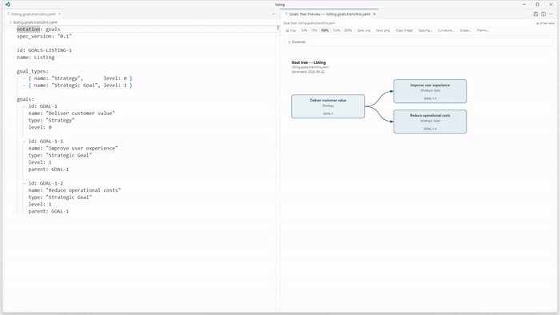

Draw a diagram
Write a few lines of text, see a diagram. Install the Studio extension and open a recognised file in VS Code — the preview refreshes on save.
Install Studio →Architecture-as-Code for the enterprise — the git-native, text-first discipline software already has, carried up to the strategy, business and architecture layers that code-scoped tools never reach.
Write a few lines of text, see a diagram.
Free and open source. No sign-up.

Write a few lines of text, see a diagram. Install the Studio extension and open a recognised file in VS Code — the preview refreshes on save.
Install Studio →Adopt Transitrix for your organisation. One prompt to a coding agent scaffolds a structured repository and CI validates every change.
Methodology quick start →Follow a goal to the capabilities and systems it depends on, and see the chain as a diagram.
Author processes in structured YAML, preview them as BPMN or process blueprints, and review every change in Git.
Trace requirements upstream to goals and downstream to verification and release coverage from the same model.
Against code-scoped tools. Architecture-as-Code exists today and stops at software. The layers where the money is committed — motivation, strategy, business — are the ones it never reaches, and they are the ones this covers.
Against context and memory layers. This is a formal model, not free-form notes and not opaque embeddings. It validates, it diffs, and a change to it is reviewed the way a change to code is reviewed. A machine can act on it because it is grounded, not because it was remembered.
You leave with a decision you can keep true. Not a report of one — the model the decision was made in, in your own repository, and the method to keep it current after we are gone.
What your organisation holds afterwards: the decision, the model it was made in inside your own repository, and the method with a team able to keep it current. It starts with a short conversation about one decision in front of you.
Talk to us — hello@transitrix.com · See the Acme worked example · Explore Transitrix Studio
Eight short steps from "What is this?" to your first diagram in about 20–30 minutes.
Start the learning path →Cheat sheets, explainers and worked examples — read on the page or download the PDF with no sign-up.
Browse the library →What is Transitrix? · Enterprise as text · Vs. drawing tools · Which editor? · Open source · What can I model? · Capability maps · Do I need DSM?